Dishonored
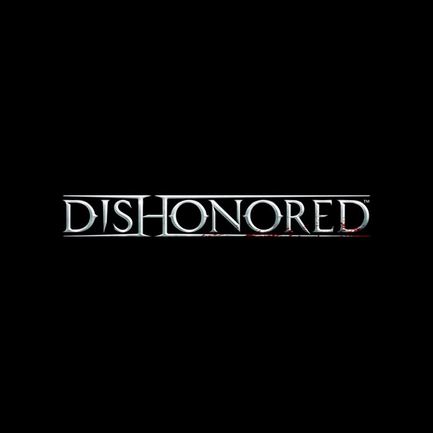
Dishonored — это серия иммерсивных симуляторов от первого лица, погружающая игрока в мир, где промышленная революция соседствует с темной магией, а чума уносит тысячи жизней. История о мести, долге и выборе, который определяет судьбу целой империи.
Об игре
Основная информация
- Жанр: Immersive sim, Stealth, Action-adventure
- Год выхода: 2012 (Dishonored), 2016 (Dishonored 2)
- Разработчик: Arkane Studios
- Издатель: Bethesda Softworks
Игровой мир и сюжет
Действие разворачивается в вымышленной альтернативной вселенной, где разделённые островные цивилизации объединены имперским знаменем семьи Колдуин. Основное действие игр происходит в городах Дануолл и Карнака, стилизованных под Лондон и Эдинбург конца XIX века. В первой части бывший королевский защитник Корво Аттано ложно обвинён в убийстве императрицы Джессамины Колдуин и обесчещен перед лицом народа, из чего и происходит название игры "Dishonored" — "Обесчещенный". Чтобы вернуть трон законной наследнице, а по совместительству своей дочери, Эмили Колдуин, он должен пройти тяжёлый путь: он будет скрытен и бесшумен, если жаждет мира и блага своему народу, или же зальёт улицы Дануолла кровью и обречёт империю на хаос и тиранию. Во второй части уже повзрослевшая Эмили (или снова Корво, в зависимости от выбора игрока) сталкивается с узурпацией власти Делайлой Копперспун, сводной сестрой Джессамины, и отправляется в солнечную, но полную опасностей родину Корво — Карнаку.
Интересные факты
- Архитектура и дизайн мира создавались с опорой на реальную архитектуру Лондона, Эдинбурга и Праги.
- Технология китового масла в игре — это альтернативный источник энергии, заменивший нефть и уголь.
- Система «Хаоса» (Chaos) заметно влияет на мир: чем больше людей вы убиваете, тем больше крыс, жертв чумы и мрачных событий происходит в мире игры.
- Знаменитые Костяные амулеты создаются из костей китов и наделяют владельца случайными магическими эффектами.
Персонажи
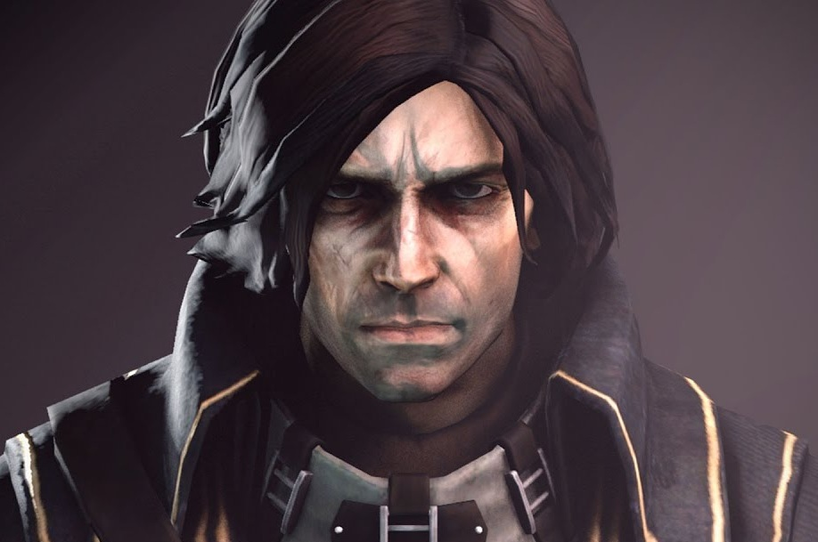
Корво Аттано (молодой)
Лорд-Защитник императрицы Джессамины в событиях Dishonored. Молодой, целеустремлённый и смертоносный мастер клинка. После ложного обвинения получает метку Чужого и становится молниеносным призраком на улицах Дануолла.
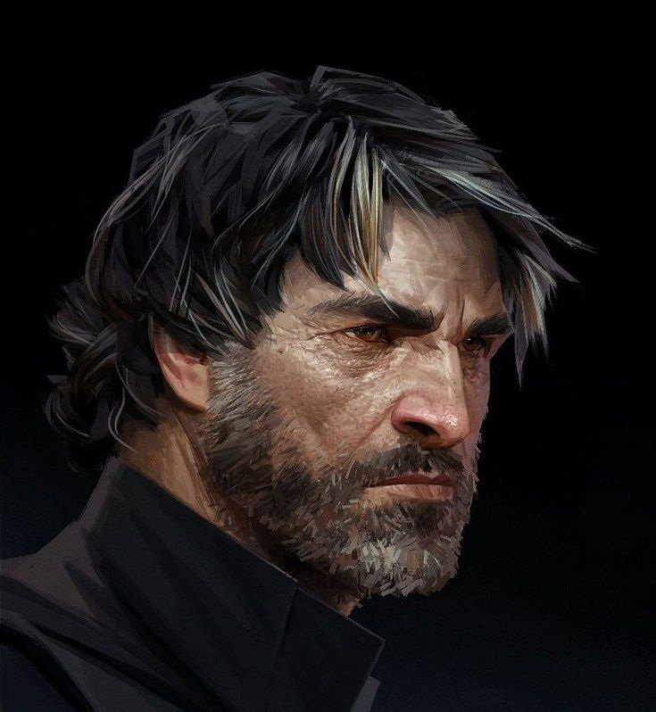
Корво Аттано (старый)
Спустя 15 лет в Dishonored 2. Седеющий, уставший, но не потерявший мастерства. Его арсенал включает телепортацию, вселение в существ, остановку времени, управление стаями крыс и мощные потоки ветра — отсылка к ветреной родине, Серконосу.
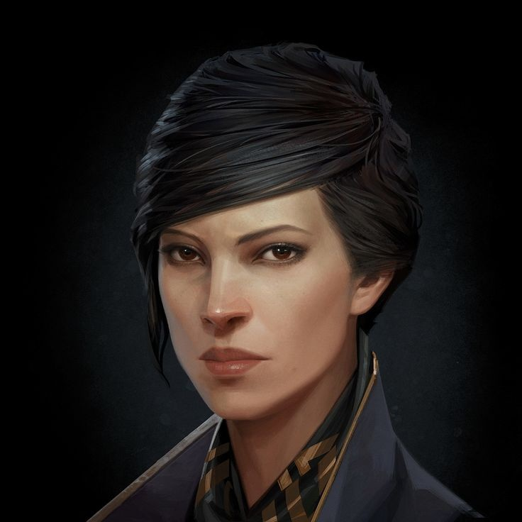
Эмили Колдуин
Законная императрица Островов. В Dishonored 2 выступает как играбельный персонаж с уникальным набором умений: притяжение к поверхностям, создание двойников, становление ползучей тенью. Её стиль боя более гибкий и тактический.
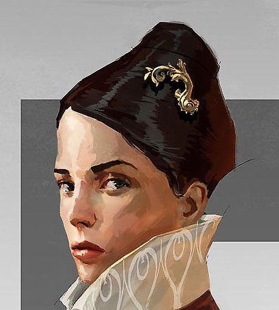
Джессамина Колдуин
Императрица Островов, мать Эмили. Мудрая и прогрессивная правительница, стремившаяся искоренить чуму. Её убийство в начале первой части запускает всю цепочку событий серии. Её образ присутствует в воспоминаниях и видениях.
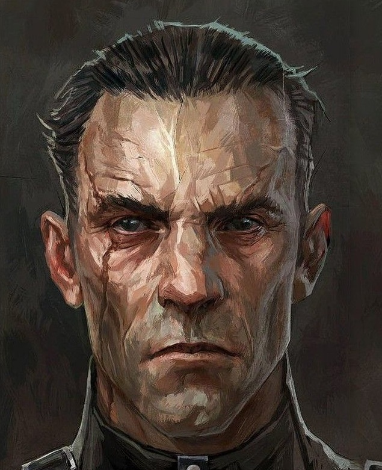
Дауд
Легендарный наёмный убийца, лидер банды «Китобоев». Запустил цепочку ключевых событий, убив Джессамину. Морально сложный персонаж: в дополнениях раскрывается как личность, которой хочется сопереживать. Владеет отточенным мастерством ближнего боя.
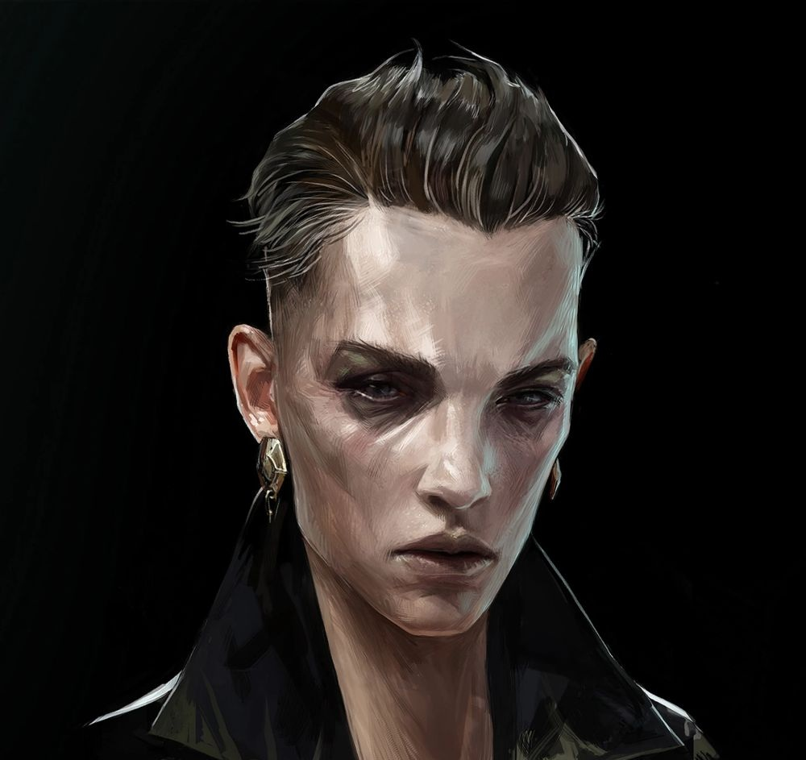
Делайла Копперспун
Главная антагонистка Dishonored 2. Сводная сестра императрицы Джессамины и могущественная ведьма. Использует тёмную магию для захвата власти, пытаясь стереть границу между миром живых и Бездной. Глубоко травмированная героиня.
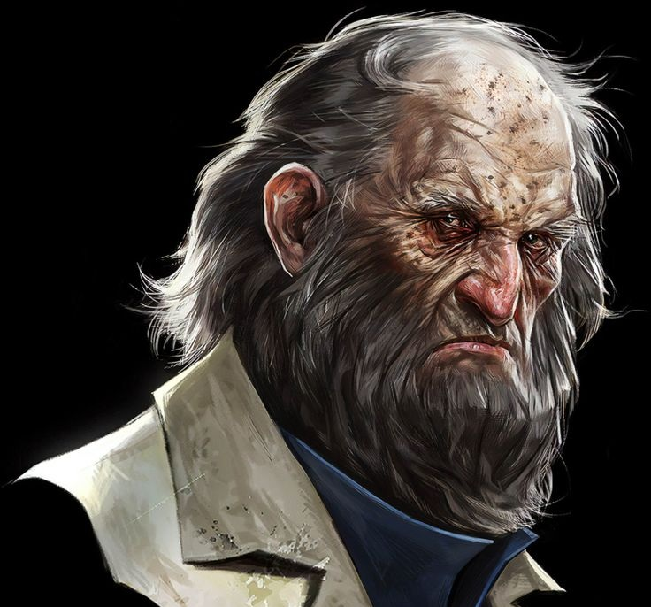
Антон Соколов
Придворный лекарь и художник. Гениальный учёный, создавший ворвань, основу для инженерии и сыворотку от чумы. Циничный, высокомерный, но преданный Корво и Эмили. Его дневники раскрывают тёмные тайны мира игры.
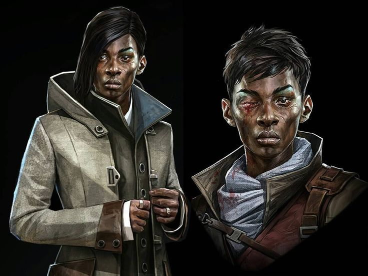
Меган Фостер
Член банды "Китобоев" в первой части, позже — капитан судна "Dreadful Wale". В Dishonored 2 она становится верным союзником протагониста и всеми силами помогает главному герою приблизиться к развязке.
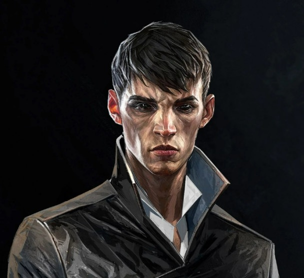
Чужой
Безвольный заложник и могущественный бог самой Бездны. Был похищен древним культом. В играх серии выступает всевластным, но не вмешивающимся проводником, позволяющим герою самому выбирать свой путь к финалу.
Геймплей
Основные механики
Игровой процесс строится на сочетании стелса, паркура и умений, дарованных меткой Чужого. Игрок может перемещаться по уровням вертикально, используя способности и навыки. Боевая система позволяет комбинировать холодное оружие, пистолеты и гаджеты (мины, гранаты, приманки).
Цели игрока
Основная цель — устранение или нейтрализация ключевых фигур, стоящих на пути восстановления порядка. Игра поощряет нелинейный подход: каждую миссию можно пройти бескровно или устроить кровавую бойню, усугубив положение в мире.
Особенности и отличия
Dishonored выделяется среди других игр жанра Immersive Sim невероятной свободой выбора и проработкой уровней. Каждое задание — это локальная песочница с множеством путей проникновения. Система «Хаоса» делает каждый выбор значимым: стиль прохождения напрямую влияет на концовку, состояние мира и поведение NPC.
Галерея
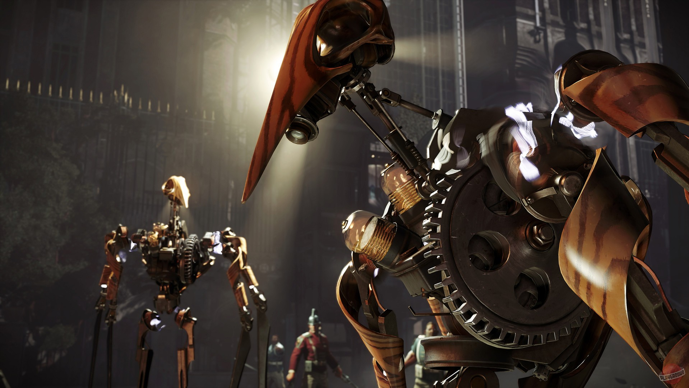
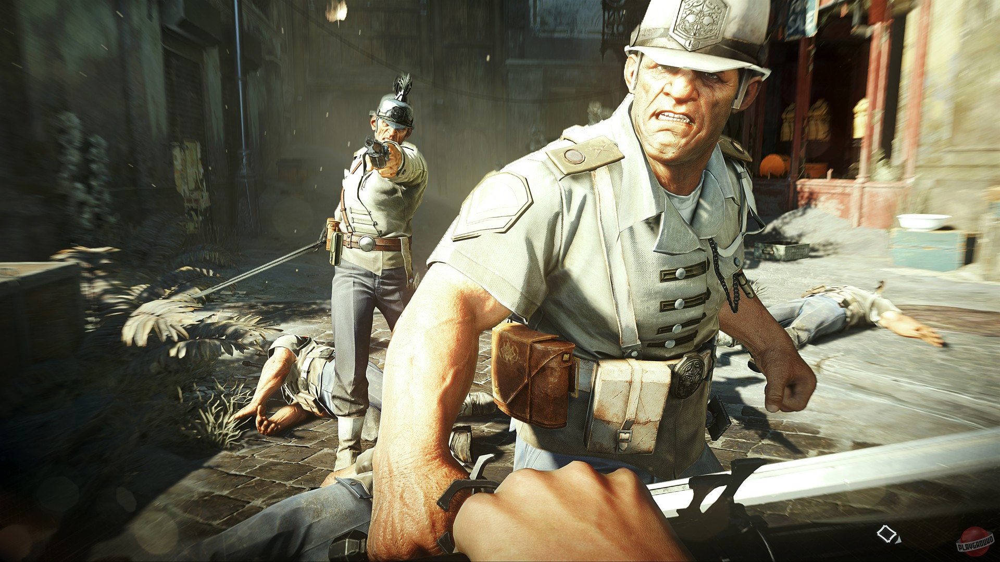
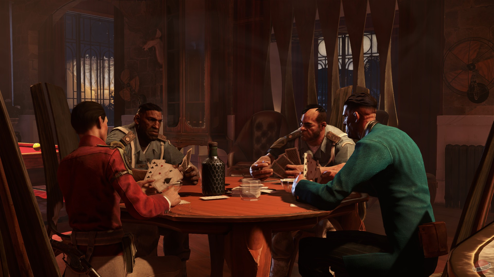
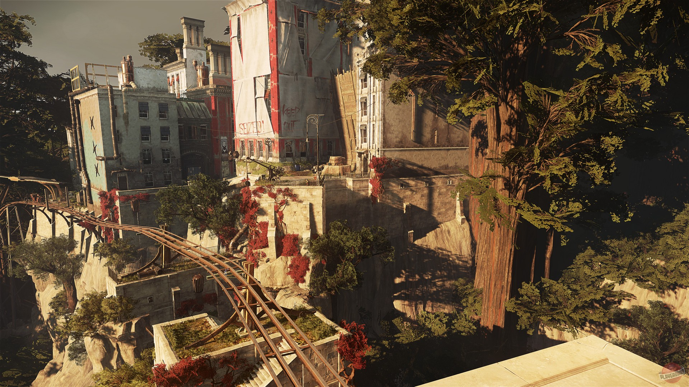
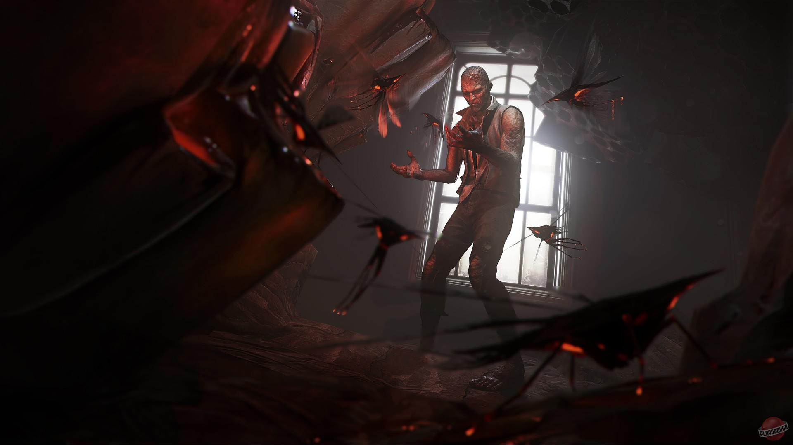
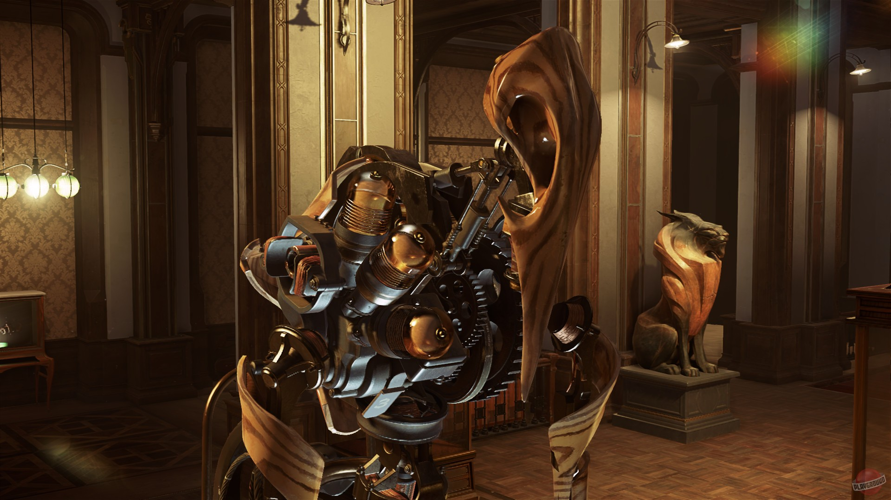
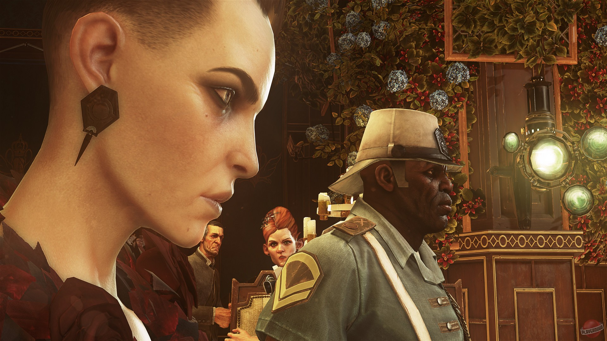
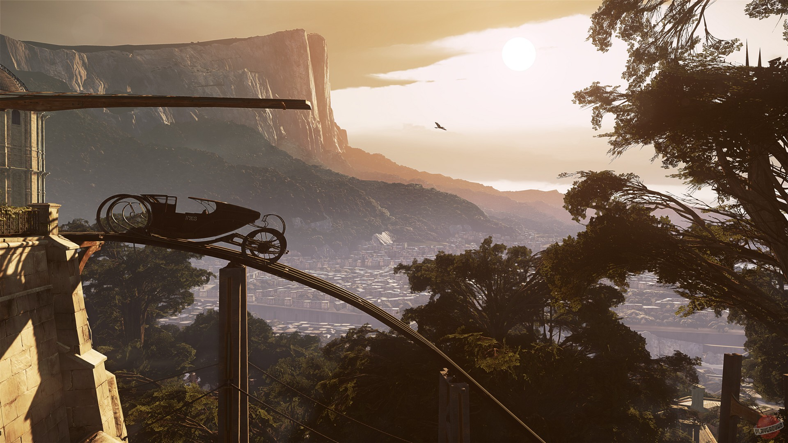
Мнение автора
Почему мне нравится эта игра
Эта серия игр является редким и качественным продуктом вне времени, построенным в стилистике Англии/Франции эпохи декаданса. Меня больше всего зацепил геймплей именно за Корво Аттано и его игровой скиллсет. Возможность стать молниеносным и при этом скрытным уроженцем Серконоса, вновь и вновь спасающим свою империю и своих императриц, в мрачной атмосфере Дануолла, а после чуть ли не обречённой, но при этом сохраняющей надежду Карнаки.
Кому я её рекомендую
Всем ценителям эпохи декаданса, любителям художественных искусств, концептуализма и стелс игр.
Оценка
Среди иммерсивных симуляторов безоговорочно лучшая. Очень продуманная, развитая и главное завершённая серия игр.